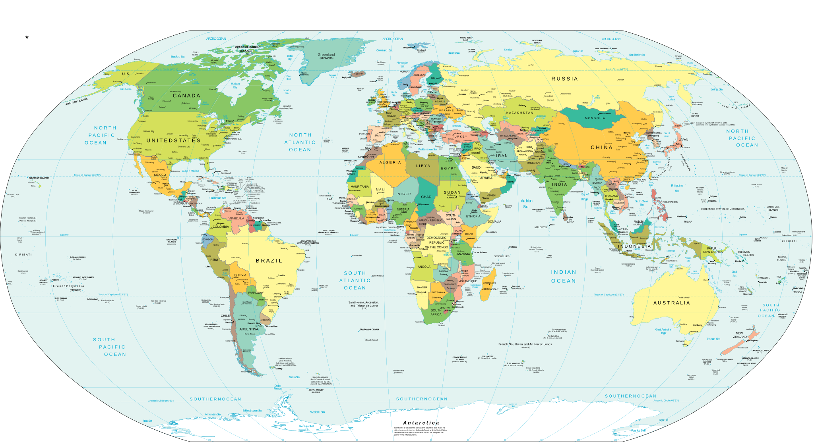

Current strategic picture
A living map of strategy and warfare.
A world view of recent assessments, trackers, map packets, and source work across theaters and domains.
Loading updates

tracker
map/source packet
active watch
Selected record
Choose a map point
Open product
Select a marker to open the record behind it.
Browse by theater or domain
All topic hubs
Indo-PacificChina, Taiwan, South China Sea, allied posture
Russia / EuropeRussia, NATO, Ukraine, European allied sources
HomelandU.S. law enforcement, border, sanctions, threat sources
Strategic WeaponsNuclear, missile, WMD, arms control
Cyber / SpaceCyber, telecoms, critical infrastructure, counterspace
ArcticHigh North, NORAD, Nordic defense, infrastructure
Middle EastIran, Red Sea, Houthi maritime disruption
Search Results
| Title | Type | Date | Collection | Format |
|---|